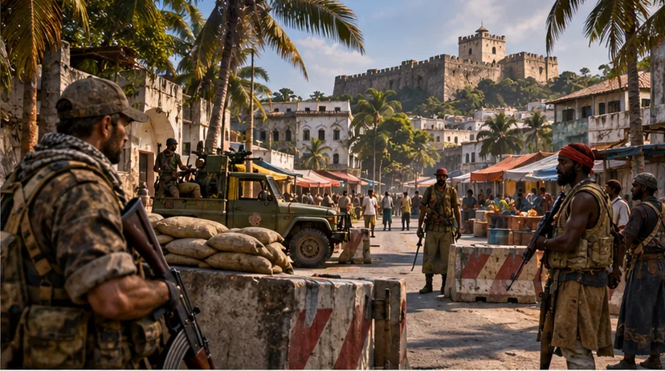
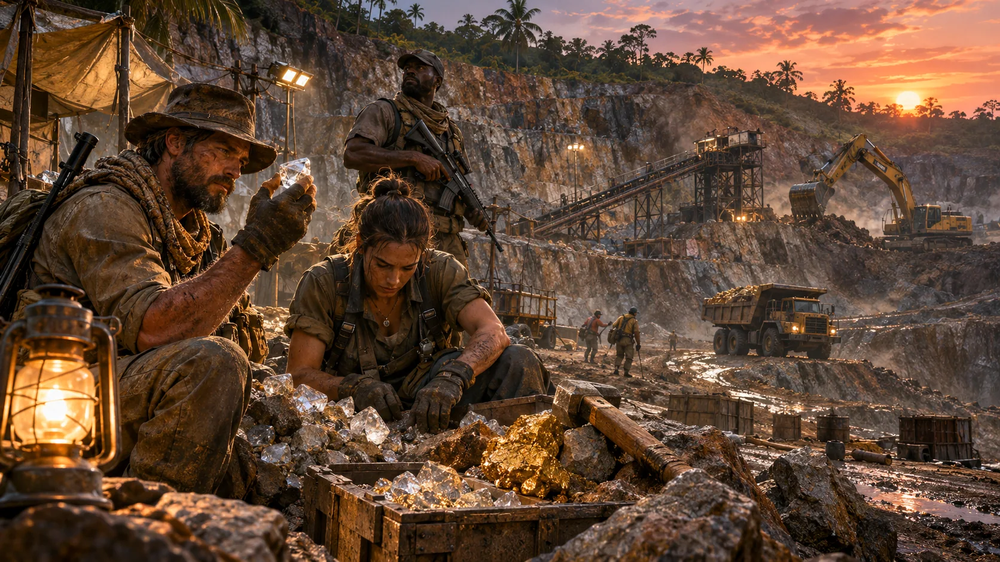
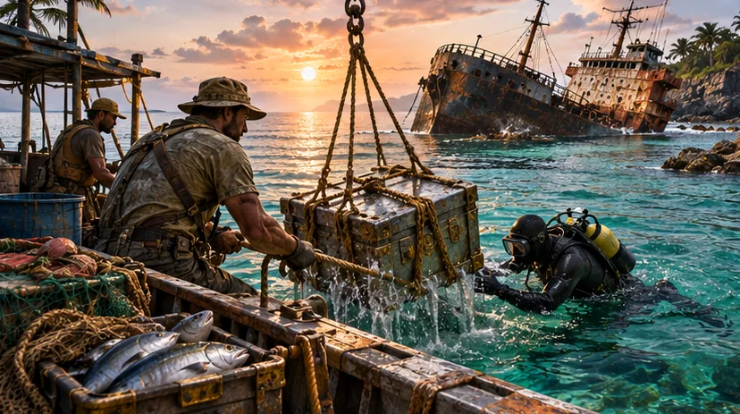
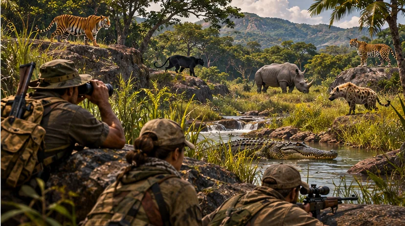
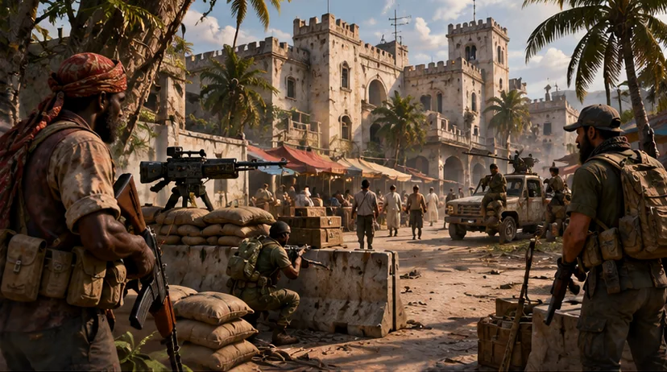

ЗАНЗИБАРИЯ.
МИР ВОЗМОЖНОСТЕЙ.
Захватывай города. Добывай алмазы и золото. Ищи грузы погибших кораблей. Рыбачь, торгуй, выслеживай опасных зверей. Строй собственную историю в ролевом мире на базе DayZ.
Найти свой путь ↓Описаны задуманные игровые циклы и RP-сценарии. Точный состав модов, точки добычи, цены, доходы и правила захвата определяются конфигурацией сервера. Изображения художественные, не скриншоты механик.
Не одна история.
Тысячи решений.

Захват и удержание городов
Участвуй в борьбе за поселения, защищай дороги, снабжай гарнизоны и получай доход с подконтрольных территорий.
Исследовать механику
Добыча алмазов
Ищи месторождения, добывай сырьё, организуй охрану и договаривайся о продаже ценных камней.
Исследовать механику
Золотые прииски
Добывай золото, отправляй партии руды на обработку, создавай торговые маршруты и защищай экспедиции.
Исследовать механику
Рыбалка и промысел
Лови рыбу на берегу или с лодки, продавай улов, снабжай поселения и выстраивай рыбацкие артели.
Исследовать механику
Грузы затонувших кораблей
Исследуй побережье, ищи места крушений и поднимай ценный груз из воды.
Исследовать механику
Охота и браконьерство
Выслеживай опасных животных, добывай трофеи и участвуй в борьбе с незаконной торговлей.
Исследовать механику
Торговля и контрабанда
Соединяй прииски, порты и города. Контракты, конвои, дефицит и политика влияют на стоимость товаров.
Исследовать механику
Медицина и гуманитарные миссии
Перевози медикаменты, лечи пострадавших и договаривайся о гуманитарных коридорах.
Исследовать механикуТвоя история не начинается
с автомата в руках.
Стань рыбаком, старателем, торговцем, проводником, бойцом, врачом или журналистом.
Договорись с рынком, фракцией, перевозчиком или другой RP-группой.
Выходи на промысел, в экспедицию или на переговоры. Защищай находки и репутацию.
Помогай поселению, поддерживай местный бизнес или вступай в борьбу за власть.
В этом мире сюжет делают игроки.
Занзибария является альтернативной историей в игровом мире ролевой игры на базе DayZ. Захваты, торговля, охота и другие действия проходят в рамках RP-регламента. Сайт описывает замысел и игровые возможности, а не гарантирует уже включённый функционал.